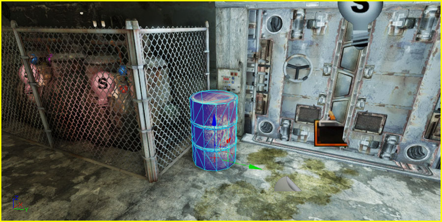
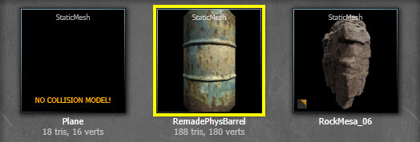
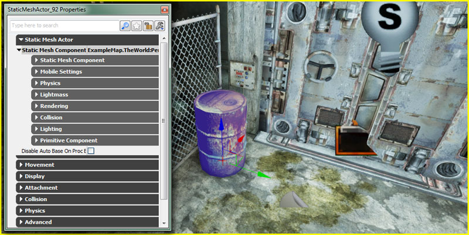
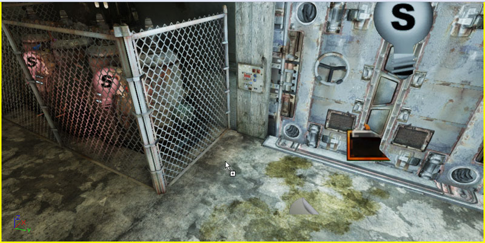
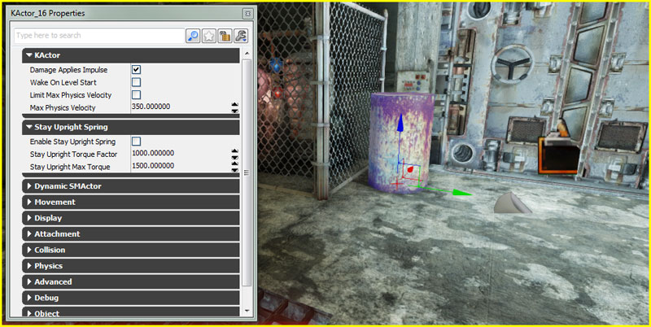
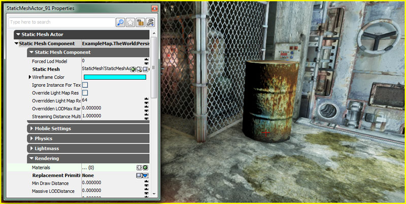
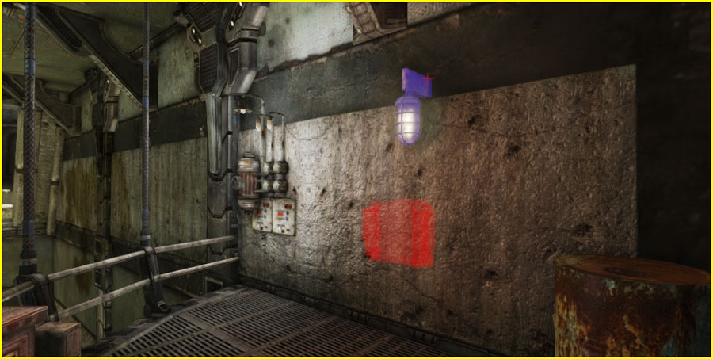
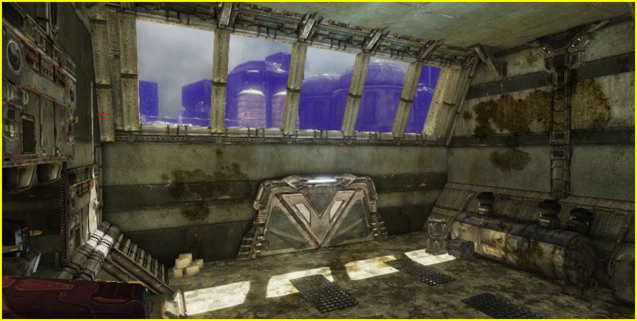

UDN
Search public documentation:
UsingStaticMeshActorsCH
English Translation
日本語訳
한국어
Interested in the Unreal Engine?
Visit the Unreal Technology site.
Looking for jobs and company info?
Check out the Epic games site.
Questions about support via UDN?
Contact the UDN Staff
日本語訳
한국어
Interested in the Unreal Engine?
Visit the Unreal Technology site.
Looking for jobs and company info?
Check out the Epic games site.
Questions about support via UDN?
Contact the UDN Staff
使用静态网格actor
概述

放置
- 在内容浏览窗口中，选中您想以静态网格actor的形式添加到地图里的静态网格物体。

- 在视口中右击您想放置网格物体的位置并从关联菜单中选择 Add StaticMesh: [MeshAssetPath](添加静态网格：[网格物体路径]) 。关联菜单中的 Add RigidBody(添加刚体):[MeshAssetPath(网格物体路径)] 。位置不必非常精确。您也可以事后任意进行重新放置、旋转和框选网格物体。

- 静态网格物体已经以静态网格actor的形式放置在地图中了， 如 Property Window 所示。

- 在浏览窗口中，定位您想以静态网格actor的形式添加进地图中的静态网格物体。
- 在内容浏览器中左击静态网格物体，从内容浏览器中用鼠标拖拽(同时压低鼠标左键)到视口中您想要放置网格物体的位置。位置不必非常精确。您也可以事后任意进行重新放置、旋转和框选网格物体。

- 放开鼠标左键在地图中以静态网格actor的形式放置网格物体，如 Property Window 所示。
转换到/从其他actor转换
- 在视口中，选中您想要转换成静态网格actor的actor。

- 右击该actor并选择 Convert(转换) > Convert [CurrentActorType] to StaticMeshActor (转换当前actor种类到静态网格物体actor)

- 该actor已经转换成一个静态网格actor，您可以在 Property Window 中查看。

材质覆盖
- 在视口中，选中您想要赋予新材质的静态网格actor并按 F4 在属性窗口中打开它的属性。

- 在 StaticMeshComponent(静态网格组件) 的 Rendering(渲染) 类别中，通过点击
 按钮添加一个新的项到 Materials 数组。如果该静态网格物体有多个材质槽，您必须在数组中添多个项，使它们的数量能同静态网格物件的材质槽数量相符。
按钮添加一个新的项到 Materials 数组。如果该静态网格物体有多个材质槽，您必须在数组中添多个项，使它们的数量能同静态网格物件的材质槽数量相符。
- 在内容浏览窗口中，选中您想在地图里应用到静态网格actor上的材质。

- 在 Materials(材质) 数组中按下 给相关项的按钮赋予材质。现在显示材质已经应用到网格上了。

- 在内容浏览窗口中，定位您想应用到地图中的静态网格物体actor上的材质。
- 在浏览窗口中在材质上左击并从Conteng Browser(内容浏览器)中拖曳鼠标(同事压低鼠标左键)到视口中您想应用该材质的静态网格Actor部分。

- 放开鼠标左键应用该材质。现在所看到的网格物体已经应用了材质，并且在属性窗口中的 Materials(材质) 数组已经更新。
碰撞

所选中窗外的的静态网格actor组成了玩家触碰不到的背景场景。
Collision Types-碰撞种类 Collision Type(碰撞种类) 属性呈现多个碰撞属性的简单方法。在虚幻编辑器中更改这个数值会在actor上设置低关卡标记，如 CollideActors(碰撞actor), BlockActors(屏蔽actor), BlockZeroExtent(屏蔽零粗细) 以及它的 CollisionComponent(碰撞组件) 以便同碰撞种类的描述匹配。| Collision Type(碰撞种类) | 描述 |
|---|---|
| COLLIDE_CustomDefault | 程序员设置碰撞。选中该项时在默认属性中把碰撞恢复到默认设置。 |
| COLLIDE_NoCollision | actor既不会屏蔽也不会触碰其他actor或者轨迹。 |
| COLLIDE_BlockAll | actor会屏蔽其他actor和轨迹 |
| COLLIDE_BlockWeapons | actor只会屏蔽零粗细轨迹，如即时击打武器。 |
| COLLIDE_TouchAll | actor会碰撞其他actor和轨迹。 |
| COLLIDE_TouchWeapons | actor只会触碰零粗细轨迹，如即时击打武器。 |
| COLLIDE_BlockAllButWeapons | actor只会阻挡其他actor和非零粗细轨迹 |
| COLLIDE_TouchAllButWeapons | actor只会触碰其他actor和非零粗细轨迹。 |
| COLLIDE_BlockWeaponsKickable | 和 COLLIDE_BlockWeapons 相同，但也会允许玩家踢这个actor |
- Collide Complex(复杂碰撞)
- 如果启用，在这个actor上简化碰撞会被忽略，并且会表现在每个多边形上。简化碰撞几何体在虚幻编辑器中或3D内容创建包中生成。碰撞每个多边形对非零粗细踪迹来说十分有用，这样子弹就能精确碰撞。碰撞每个多边形不推荐在actor移动中应用，这样对性能要求太高。
- Block Rigid Body(屏蔽刚体)
- 如果启用，使用Physx的actor应该同actor对碰。
- No Encroach Check(侵占检测)
- 如果启用，当这个actor移动关闭时，启用encroachment check(侵占检测)。启用该项将会加速游戏的运行，但是 Actor 将不能触碰触发器、推动玩家，进入或走出体积。
- Path Colliding(路径碰撞)
- 如果启用，该actor在虚幻编辑器建立路径时屏蔽路径。
- Collision Component(碰撞组件)
- 用来计算这个actor碰撞的组件引用
距离剔除
 在渲染网格物体的地方控制距离的功能可以在玩家距离网格物体过远而看不见它们时用来隐藏网格物体,或者可以通过在低分辨率的 MinDrawDistance 和高分辨率的 MaxDrawDistance 相同的地方放置多个静态网格actor的方法,使用低分辨率替代物(或者单个替代多个高分辨率网格物体的替代物)来替代一个或多个高分辨率网格物件。
在渲染网格物体的地方控制距离的功能可以在玩家距离网格物体过远而看不见它们时用来隐藏网格物体,或者可以通过在低分辨率的 MinDrawDistance 和高分辨率的 MaxDrawDistance 相同的地方放置多个静态网格actor的方法,使用低分辨率替代物(或者单个替代多个高分辨率网格物体的替代物)来替代一个或多个高分辨率网格物件。
 当然，仅仅使用由静态网格物体过度而来的LOD系统可以达到如上所述同样的效果，但是这种方法可以使关卡设计师修改设置，因为 Mesh Simplification Tool(网格物体简化工具)? 可以在虚幻编辑器中使用现有网格物体来制作低分辨率版本。如上所述，多个高分辨率网格物体可以使用单个低分辨率替代品替代，这样不仅能降低多边形数量，而且能降低描画函数调用的次数。Massive LOD系统也是基于同样的概念。
请参阅 Visibility Culling 获取更多如何在虚幻3引擎中控制静态网格物体和其他几何物体可见性的信息。
当然，仅仅使用由静态网格物体过度而来的LOD系统可以达到如上所述同样的效果，但是这种方法可以使关卡设计师修改设置，因为 Mesh Simplification Tool(网格物体简化工具)? 可以在虚幻编辑器中使用现有网格物体来制作低分辨率版本。如上所述，多个高分辨率网格物体可以使用单个低分辨率替代品替代，这样不仅能降低多边形数量，而且能降低描画函数调用的次数。Massive LOD系统也是基于同样的概念。
请参阅 Visibility Culling 获取更多如何在虚幻3引擎中控制静态网格物体和其他几何物体可见性的信息。